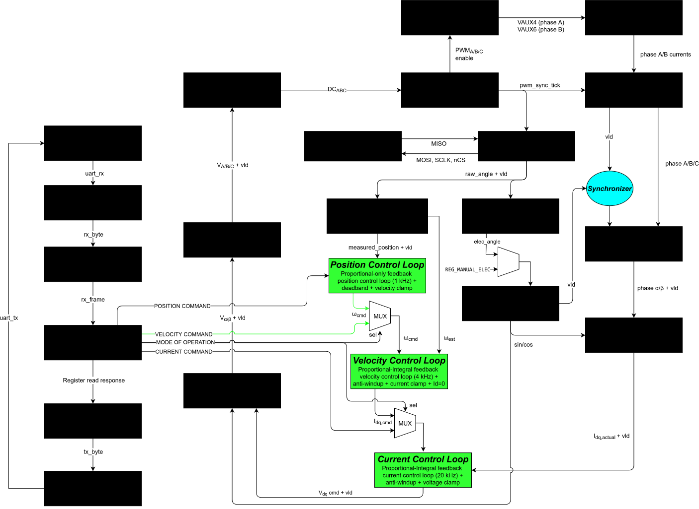

Hi there! My name is Kevin and I am an incoming senior at MIT, where I study electrical engineering in the EECS department.
Education
Massachusetts Institute of Technology (MIT) – BS in Electrical Engineering (GPA: 3.8/4.0) | May 2027
Courses: FPGA, Analog & Digital Electronics, Embedded Design, Power Electronics, Signal Processing, RF, E&M
Brief Bio
This summer, I was an FPGA design engineering intern at Blue Origin (Honeybee Robotics).
I previously interned at the Waters Corporation as an electrical engineer.
I am passionate about embedded design and hardware engineering, with experience
in C/C++, Verilog/SystemVerilog, VHDL, BluespecSV, Python, MATLAB/Simulink, and Assembly.
I have significant experience using Vivado for synthesis/simulation, ModelSim/QuestaSim, Git,
Altium/KiCad for PCB design, Cadence for layout, oscilloscopes, and logic analyzers.
I have experience with bus protocols like AXI-Full, AXI-Stream, AXI-LIte, I2C, SPI, and UART as well as concepts
like clock domain crossing, FPGA static timing analysis, pipelining,
and digital signal processing.
In the spring of 2026, I was a TA for MIT's Circuits and Electronics class. I also taught
a class for HSP that introduced students to electricity and magnetism, namely Maxwell's equations,
lumped-element circuit theory, and digital logic.
Experience
FPGA Design Engineering Intern – Blue Origin (Honeybee Robotics)
Developed a 1 MHz closed-loop BLDC motor emulator in VHDL for FPGA controller validation, using Euler integration, coupled-inductance matrix inversion, and KCL correction to model phase currents, back-EMF, and torque.
Modeled LVDT and resolver emulators driven by Butterworth low-pass-filtered PDM excitations, leveraging quadrant-folded BRAM sine LUTs for amplitude modulation and mechanical-to-electrical rotor angle conversion.
Developed a UVM-inspired verification environment with custom agents, scoreboards, and a behavioral reference model, validating emulator accuracy to within 3 mA.
Projects
FPGA Ethernet/UDP Offload Engine with Custom AXI4 DMA (SystemVerilog)
Designed a custom 100-Mb/s Ethernet MAC in SystemVerilog for an MII PHY, with RX/TX framing, preamble/SFD handling, CRC32/FCS, padding/IFG, dual-bank BRAM buffering, and CDC PHY↔system clock handshakes.
Built a hardware Ethernet/IPv4/UDP engine with AXI4-Stream interfaces, implementing packet parsing/generation, dynamic IPv4 checksums, ARP responses, per-packet MAC/IP/port metadata, and verification with Scapy/Wireshark.
Developed bidirectional AXI4 S2MM/MM2S DMA to 256-MB DDR3 via MIG/SmartConnect, handling bursts, AXI responses, TKEEP→WSTRB, partial words, 4-KB boundaries, and ping-pong buffers for byte-exact PC→FPGA→DDR3→FPGA→PC transfers.
VHDL-Based Field Oriented Control Engine for a PMSM (Design in VHDL, Verification in SystemVerilog)
Designed an FOC motor controller in VHDL, integrating AS5048A encoder feedback, XADC phase-current sensing, a CORDIC, Clarke/Park transforms, cascaded position/velocity/current control loops, and Space Vector PWM.
Engineered fixed-point DSP datapaths with pipelined arithmetic, Q-format scaling, and PI anti-windup; synchronized sampling to PWM periods and implemented XADC offset calibration plus sensor-timeout fault protection.
Achieved post-route timing closure at 100 MHz on the Artix-7 XC7A100T, with 0.491ns worst setup slack and 0.010ns worst hold slack; implementation used 3.36K LUTs, 2.65K registers, and 42 DSP slices, with ~0.123 W on-chip power.

Speculative 5-Stage RISC-V CPU with Branch Prediction, Caching, and AXI Interface (SystemVerilog)
Designed a 5-stage pipelined RISC-V processor in SystemVerilog, integrating fetch, decode, execute, memory, and writeback stages with hazard detection, pipeline stalls/flushes, branch recovery, and memory backpressure handling.
Integrated a 64-entry dynamic branch predictor and 1 KiB L1 data cache, using a BTB with 2-bit saturating branch-history counters and a direct-mapped, write-back/write-allocate cache with dirty-line eviction and refill logic.
Synthesized and implemented the processor SoC plus UART infrastructure on a Xilinx A7-100T FPGA at 100 MHz, achieving 0.086 ns setup slack and 0.056 ns hold slack; implementation reported 0.149 W total on-chip power.